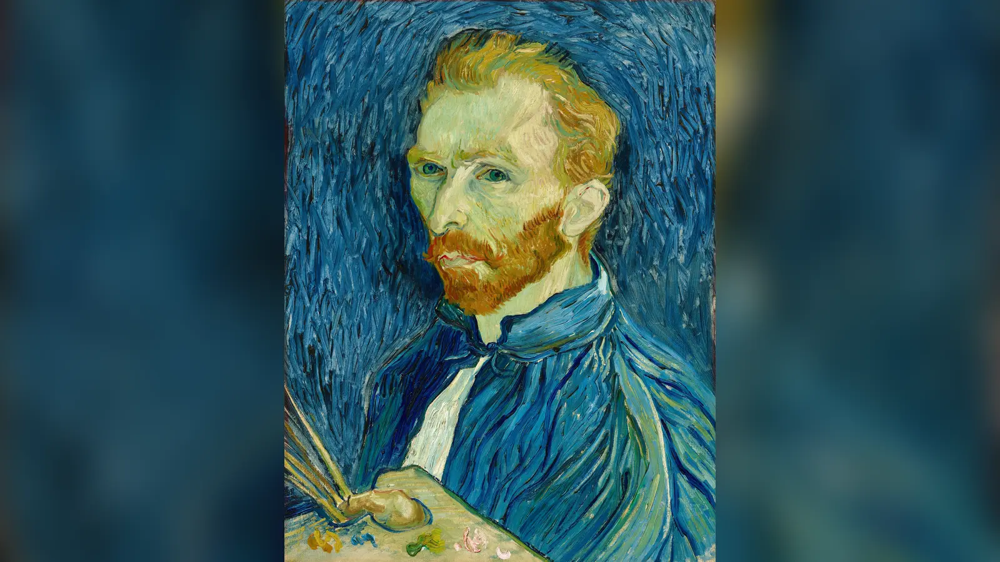
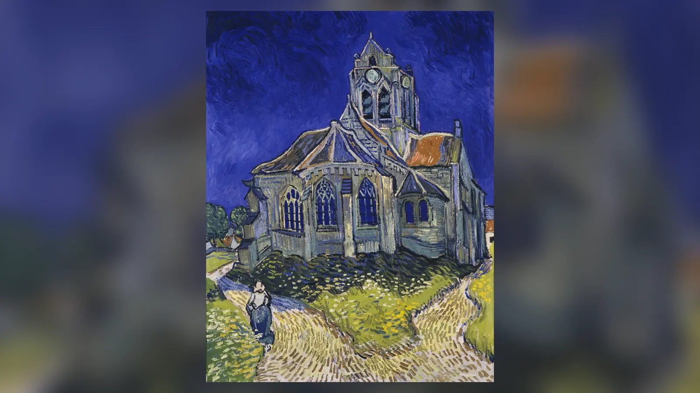
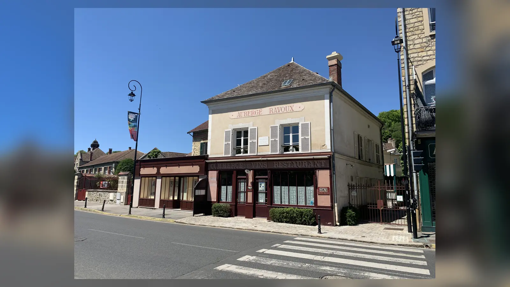
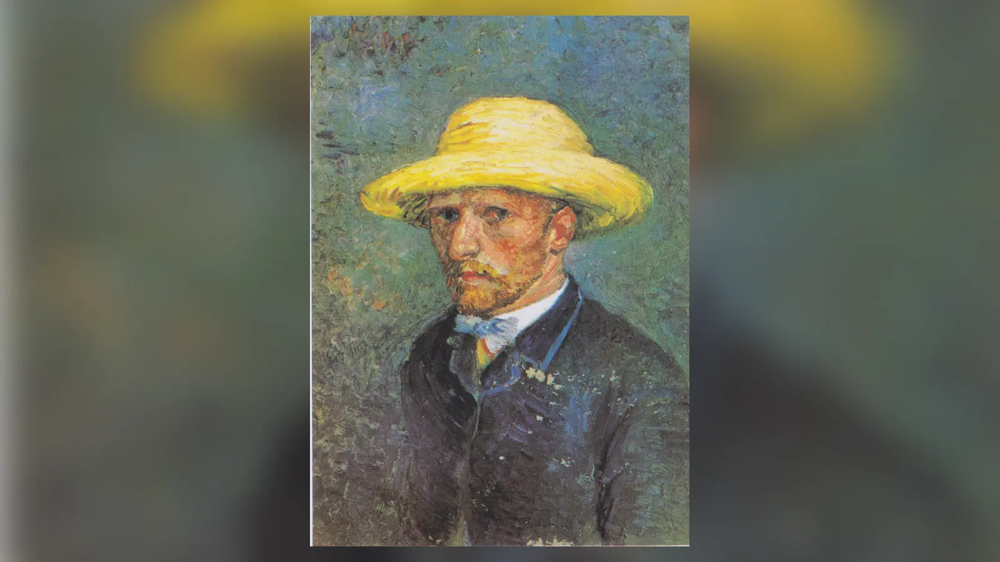
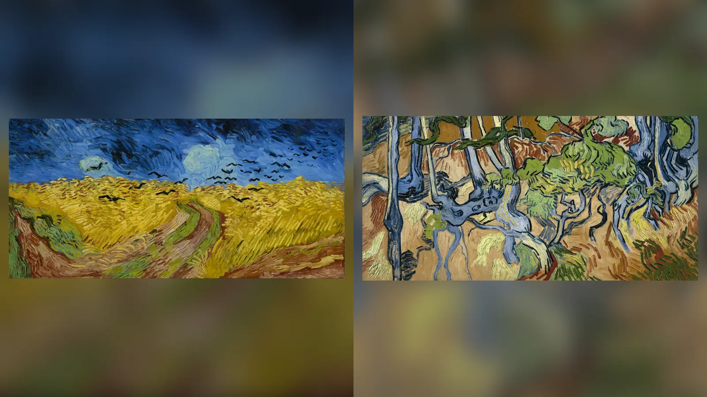

27 Temmuz 1890 akşamı Vincent van Gogh, Auvers-sur-Oise’daki Auberge Ravoux’ya ağır yaralı hâlde döndü. Vücuduna bir kurşun girmişti. Onu kimin vurduğunu gösteren doğrulanmış bir görgü tanığı yoktu; olayda kullanıldığı kesin olarak belirlenmiş silah da o gün ele geçirilmedi. Van Gogh hemen ölmedi. Yaklaşık iki gün boyunca pansiyondaki odasında yaşadı ve kardeşi Theo Paris’ten gelerek son saatlerinde yanında kaldı. 29 Temmuz’un erken saatlerinde, henüz 37 yaşındayken hayatını kaybetti. Dönemin yakın çevresi ve daha sonraki sanat tarihi anlatısı olayı intihar olarak kabul etti. Van Gogh Museum ve Musée d’Orsay gibi başlıca kurumlar da bugün sanatçının ölümünü intihar olarak tanımlamayı sürdürüyor.
Fakat Van Gogh’un ölümünün bütün ayrıntıları hiçbir zaman kesin biçimde yeniden kurulamadı. Tam olarak nerede vurulduğu bilinmiyor; vurulma anını gören güvenilir bir tanık yok; silahın o sırada nerede olduğu belirsiz ve olay hakkındaki bazı ayrıntılar ancak onlarca yıl sonra kayda geçirilen tanıklıklardan geliyor. 2011’de Steven Naifeh ve Gregory White Smith, kapsamlı biyografileri Van Gogh: The Life’da sanatçının kendisini vurmadığını, genç René Secrétan’ın da bağlantılı olduğu bir olay sırasında kazara vurulmuş olabileceğini ileri sürünce 1890’dan beri büyük ölçüde yerleşmiş anlatı yeniden tartışmaya açıldı.
Bugün asıl soru, Van Gogh’un ölümünün cinayet olduğunun kanıtlanıp kanıtlanmadığı değildir; böyle bir kanıt bulunmuyor. Tartışmanın nedeni, intihar anlatısının ana hatları güçlü görünmesine rağmen olayın fiziksel ve çağdaş belgelerinin modern bir adli soruşturmanın sağlayacağı kesinlikten çok uzak olmasıdır. Bu nedenle “Van Gogh nasıl öldü?” sorusunun kısa cevabı ile “27 Temmuz 1890’da tam olarak ne yaşandı?” sorusunun cevabı aynı kesinlikte değildir.
Van Gogh Nasıl Öldü?
Vincent van Gogh, 27 Temmuz 1890’da Auvers-sur-Oise’da ateşli silahla yaralandı ve 29 Temmuz’da Auberge Ravoux’daki odasında bu yaranın sonuçları nedeniyle öldü. Geleneksel anlatıya göre sanatçı Auvers çevresindeki tarlalara çıktı ve bir revolverle kendisini vurdu. Kurşun onu anında öldürmedi; Van Gogh pansiyona geri dönmeyi başardı ve burada doktorlar tarafından muayene edildi. Musée d’Orsay’ın 2023–2024 tarihli büyük Auvers sergisinin kronolojisi de 27 Temmuz’da kendisini vurduğunu ve 29 Temmuz’da öldüğünü belirtir.
Ancak sık tekrarlanan “bir buğday tarlasında kendisini göğsünden vurdu” anlatısının bütün unsurlarını aynı derecede kesin kabul etmek doğru değildir. Van Gogh’un ateşli silahla yaralandığı, yaralı hâlde Auberge Ravoux’ya döndüğü ve iki gün sonra öldüğü konusunda ciddi bir tartışma bulunmazken vurulmanın kesin yeri ve koşulları doğrudan bir görgü tanığıyla belgelenmiş değildir. Émile Bernard’ın ölümün hemen ardından Albert Aurier’ye yazdığı mektup bile olayın ayrıntılarını başkalarından öğrenilmiş bilgiler üzerinden aktarır.
Dolayısıyla Van Gogh’un ölümüne ilişkin kanıtları değerlendirirken iki katman birbirinden ayrılmalıdır: 1890’da ve ölümden hemen sonra kaydedilen bilgiler ile yıllar, hatta on yıllar sonra anlatılan hatıralar. Ölümün neden hâlâ tartışılabildiğini anlamanın anahtarı da bu ayrımda yatar.
Ölümünden Önceki Son Aylar: Auvers-sur-Oise Dönemi
Van Gogh, Saint-Rémy-de-Provence’daki Saint-Paul-de-Mausole kurumundan 16 Mayıs 1890’da ayrıldı. Ertesi gün Paris’e ulaştı ve kardeşi Theo ile ailesini gördü. 20 Mayıs’ta ise Paris’in yaklaşık 30 kilometre kuzeyindeki Auvers-sur-Oise’a yerleşti. Burada bulunmasının önemli nedenlerinden biri, Camille Pissarro’nun da tavsiye ettiği Dr. Paul Gachet’nin yakınında yaşayabilecek olmasıydı. Gachet tıp doktoruydu, melankoli üzerine çalışmıştı ve aynı zamanda empresyonist sanat çevresiyle ilişkileri bulunan bir koleksiyoncu ve amatör ressamdı.
Van Gogh’un Auvers’a geldiği gün Theo ve Jo’ya yazdığı mektup, son aylarını yalnızca yaklaşan bir intiharın hazırlık dönemi olarak okumanın ne kadar sorunlu olduğunu gösterir. Auvers’ın güzelliğinden, resmedebileceği eski saz çatılı evlerden, masraflarını karşılayabilecek çalışmalar yapma ihtimalinden ve Gachet’nin portresini yapma düşüncesinden söz ediyordu. Başka bir deyişle geleceğe dönük sanatsal planları hâlâ vardı.
Üretimi de olağanüstü yoğundu. Musée d’Orsay, Auvers’ta geçirdiği yaklaşık 70 günde 74 tablo ve çok sayıda çizim yaptığını belirtiyor. Portreler, köy manzaraları, bahçeler, evler ve geniş buğday tarlaları bu kısa dönemin ürünleri arasındaydı. Bu üretkenlik tek başına ruhsal durumunun iyi olduğunu kanıtlamadığı gibi, ruhsal kriz geçmişi de ölümünün kaçınılmaz biçimde intiharla sonuçlanacağını göstermez. Van Gogh’un son haftalarını yalnızca “depresyondaydı, dolayısıyla intihar etti” biçimindeki geriye dönük bir açıklamayla okumak tarihsel malzemeyi gereğinden fazla basitleştirir.
Theo’nun 5 Haziran tarihli mektubu özellikle dikkat çekicidir. Theo, Gachet’nin Vincent’ın durumunu iyi bulduğunu ve yeni bir krizin ortaya çıkmasını gerekli görmediğini yazıyordu. Temmuz ayına gelindiğinde ise aile, para ve Theo’nun iş durumuyla ilgili kaygılar daha belirgin hâle geldi. Vincent’ın 23 Temmuz’da Theo’ya gönderdiği son mektuplardan biri karamsar pasajlar içerir; fakat aynı mektupta resimlerinden ve yaptığı çalışmalardan da söz eder. Son günlere ait belgeler bu nedenle tek yönlü bir psikolojik portre oluşturmaz.
Van Gogh’un yaşamı boyunca yaşadığı krizlerin modern psikiyatri açısından tam olarak hangi tanıya karşılık geldiği de kesin değildir. Epilepsi, psikotik dönemler, bipolar bozukluk ve başka açıklamalar farklı araştırmacılar tarafından gündeme getirilmiştir. Van Gogh Museum, geçmişte doktorlarının krizlerini epilepsiyle ilişkilendirdiğini, bazı belirtilerin bugün psikoz kapsamında değerlendirilebileceğini fakat rahatsızlığının kesin nedeninin artık belirlenemeyeceğini özellikle vurgular. Sanatçıyı “deliliği sayesinde resim yapan dâhi” klişesine indirgemek de müzenin güncel yaklaşımına göre yanıltıcıdır.
Arles’te 1888 sonunda yaşadığı kulak krizi bu geçmişin önemli bir parçasıdır, ancak ölüm olayından ayrı değerlendirilmelidir. O gecenin ne ölçüde belgelenebildiğini ve Gauguin bağlantılı alternatif yorumları Van Gogh kulağını neden kesti? başlıklı incelememizde ayrıntılı biçimde ele aldık.

27 Temmuz 1890: O Gün Ne Oldu?
27 Temmuz Pazar günü Van Gogh pansiyondan ayrıldı. Sonraki saatlerde tam olarak nereye gittiği, vurulmanın hangi noktada gerçekleştiği ve silahı nereden temin ettiği bugün bile kesin biçimde gösterilebilmiş değildir. Akşam saatlerinde Auberge Ravoux’ya yaralı olarak döndü. Kurşun yarasının hemen ölümcül olmaması, sanatçının pansiyona kadar ulaşmasına olanak verdi.
Ravoux ailesinin anlatımına göre pansiyon sahibi Arthur Ravoux, Vincent’ın odasına çıktıktan sonra durumunu fark etti. Yerel doktorun ve ardından Dr. Gachet’nin olaya müdahil olduğu aktarılır. Kurşun çıkarılmadı ve Van Gogh odasında kaldı. Olayın tıbbi ayrıntılarının önemli bölümü daha sonraki anlatılardan geldiğinden giriş noktasının tam konumu, atış mesafesi ve doktorların değerlendirmeleri hakkında kaynaklar arasında farklılıklar vardır. Bu farklılıklar özellikle 2011’den sonra ölüm biçimi tartışmasının merkezine yerleşecekti.
Buradaki önemli sorun, elimizde modern anlamda bir olay yeri incelemesinin bulunmamasıdır. Silah olay yerinde belgelenmedi, balistik inceleme yapılmadı, vurulmanın gerçekleştiği yer güvenli biçimde korunmadı ve ayrıntılı bir otopsi raporu bırakılmadı. Dolayısıyla bugün kurşunun açısı veya atış mesafesi üzerine yapılan değerlendirmeler, 1890’dan kalan sınırlı kayıtların yeniden yorumlanmasına dayanır.

Theo’nun Gelişi ve Van Gogh’un Son Saatleri
Theo, kardeşinin yaralandığını öğrendikten sonra Auvers’a geldi ve Vincent’ın son saatlerinde yanında kaldı. Van Gogh’un ölümünün hemen ardından yazılmış belgeler, sonraki anılardan çok daha değerlidir; çünkü olayla aralarında onlarca yıllık bir zaman mesafesi bulunmaz. Émile Bernard’ın Albert Aurier’ye gönderdiği mektup da Gachet ve Ravoux’dan öğrendiği ayrıntıları ölümden yalnızca birkaç gün sonra kaydetmiştir. Bernard, Gachet’nin Vincent’a kurtulabileceğine dair umut verdiğinde sanatçının bunu istemediğini düşündüren bir karşılık verdiğinin kendisine aktarıldığını yazar.
Van Gogh’a atfedilen en ünlü cümlelerden biri “La tristesse durera toujours” yani kabaca “Hüzün sonsuza dek sürecek” sözüdür. Bu ifade popüler kültürde çoğu zaman doğrudan “Van Gogh’un son sözleri” diye sunulur. Ancak yatağının başında tutulmuş kelimesi kelimesine bir tutanak değildir. Theo’nun aktardığı son saatler bağlamından gelir. Bu nedenle sözün Van Gogh’un son saatlerinde söylediği aktarılan ifadelerden biri olarak değerlendirilmesi, kesin biçimde son cümlesi olduğunu ileri sürmekten daha güvenlidir.
Van Gogh 29 Temmuz 1890’ın erken saatlerinde öldü. 30 Temmuz’da düzenlenen cenazeye sanat çevresinden tanıdıkları katıldı. Van Gogh Museum’un Auvers sergisi belgeleri, cenazenin 30 Temmuz’da gerçekleştiğini ve ölümünün intihar olarak değerlendirilmesi nedeniyle kilisede yapılması planlanan vedanın engellendiğini gösteriyor.

Geleneksel Anlatı: Van Gogh Neden İntihar Etti?
İntihar açıklamasının yalnızca sonradan yaratılmış bir efsane olduğunu söylemek doğru değildir. Ölümden hemen sonraki çevrede olayın intihar olarak kabul edildiğini gösteren kaynaklar vardır. Bernard’ın 1890 tarihli mektubu açık biçimde bu yöndedir. Van Gogh’un kendisini öldürmek istediğine dair Ravoux ailesine ve Gachet’ye atfedilen ifadeler de geleneksel anlatının temel parçalarını oluşturur.
Buna sanatçının geçmişte yaşadığı ağır psikolojik krizler eklenir. 1888’de Arles’te kendisine zarar vermesi, Saint-Rémy’de tekrarlayan krizler yaşaması ve son mektuplarında zaman zaman görülen yoğun karamsarlık, intihar sonucuyla uyumlu bir tarihsel bağlam oluşturur. Ancak bunların hiçbiri tek başına 27 Temmuz’daki atışın nasıl gerçekleştiğinin fiziksel kanıtı değildir.
Özellikle “neden intihar etti?” sorusuna tek bir neden bulmaya çalışmak yanıltıcıdır. Theo’nun ekonomik sorunları, Vincent’ın kardeşine yük olduğu düşüncesi, sanat kariyeri hakkındaki kaygıları, sağlık sorunları ve dönemsel ruhsal krizleri aynı bağlam içinde değerlendirilebilir; fakat bunlardan herhangi birinin tek başına ölümün kesin nedeni olduğunu gösteren bir belge yoktur.
Ayrıca Van Gogh’un sanatsal açıdan tamamen umutsuz olduğu iddiası da sorunludur. Ölümünden aylar önce eleştirmen Albert Aurier onun sanatı üzerine dikkat çekici bir yazı yayımlamıştı ve eserleri sergileniyordu. Van Gogh henüz geniş kitlelerce tanınan bir sanatçı değildi, ancak sanat dünyasının tamamen dışında ve kimsenin fark etmediği bir ressam da değildi.
Van Gogh’un Ölümündeki Cevapsız Sorular
Tartışmanın en önemli nedeni, intihar sonucuyla uyumlu tarihsel anlatının yanında önemli bilgi boşluklarının bulunmasıdır. Vurulmanın kesin yeri güvenilir biçimde belirlenememiştir. Atışı gördüğü doğrulanmış bir kişi yoktur. Olaydan hemen sonra ölüm silahı ele geçirilmemiştir. Van Gogh’un o gün yanında bulunduğu düşünülen bazı eşyaların hareketleri de eksiksiz biçimde belgelenmemiştir.
Kurşun yarasının özellikleri ayrı bir tartışma yaratmıştır. Vücuttaki giriş noktası ve kurşunun izlediği düşünülen yolun kendi kendine gerçekleştirilen bir atışla ne ölçüde uyumlu olduğu konusunda farklı görüşler ileri sürülmüştür. Fakat özgün tıbbi belgelerin yetersizliği nedeniyle 1890 tarihli bir yaranın günümüz adli tıp standartlarıyla kesin biçimde yeniden değerlendirilmesi mümkün değildir.
Bu boşlukları “Van Gogh’un öldürüldüğünün kanıtları” olarak adlandırmak aynı ölçüde yanıltıcı olur. Bir olayın ayrıntılarının bilinmemesi, alternatif bir açıklamanın doğru olduğunu kendiliğinden kanıtlamaz. Ancak aynı belirsizlikler, geleneksel anlatının her ayrıntısının görgü tanıkları ve fiziksel kanıtlarla doğrulandığını söylemeyi de engeller.
Van Gogh Başka Biri Tarafından mı Vuruldu?
Tartışmanın modern dönemde yeniden alevlenmesinde Steven Naifeh ve Gregory White Smith’in 2011’de yayımlanan Van Gogh: The Life adlı biyografisi belirleyici oldu. Yazarlar, Van Gogh’un intihar etmediğini; René Secrétan adlı gençle bağlantılı bir olay sırasında başka birinin silahından çıkan kurşunla vurulmuş olabileceğini ileri sürdüler.
Secrétan’ın bağlantısı tamamen uydurma bir isimden ibaret değildi. Van Gogh’un Auvers döneminde orada bulunan gençlerden biriydi ve yıllar sonra verdiği bir röportajda sanatçıyla karşılaşmalarından, kovboy merakından ve sahip olduğu tabancadan söz etmişti. Naifeh ve Smith ayrıca sanat tarihçisi John Rewald’ın 1930’larda Auvers’ta duyduğu, Van Gogh’un gençlerin karıştığı bir olayda vurulduğuna ilişkin söylentilere dikkat çekti.
Teorinin temelinde birkaç unsur bir araya getirildi: silahın olaydan sonra bulunamaması, yaranın niteliğine ilişkin soru işaretleri, Van Gogh’un saldırgan olarak kimseyi suçlamamış olması, vurulduğu kabul edilen yer hakkındaki belirsizlik ve Secrétan’ın silah sahibi olduğuna ilişkin anlatı. Naifeh ve Smith, olayın kasıtlı bir cinayetten ziyade gençlerin karıştığı bir kazanın sonucu olabileceğini, Van Gogh’un da onları korumayı veya ölümü kabullenmeyi seçmiş olabileceğini öne sürdüler.
Fakat burada teori ile kanıt arasındaki sınır özellikle önemlidir. René Secrétan’ın Van Gogh’u vurduğunu doğrudan gösteren çağdaş bir belge, itiraf, görgü tanığı veya balistik kanıt bulunmamaktadır. Üstelik teorinin önemli parçaları olaydan onlarca yıl sonra kaydedilmiş hatıralara ve bunların yeniden yorumlanmasına dayanır. Van Gogh Museum’dan Leo Jansen da 2011’de yeni biyografinin önemli ve ilgi çekici sorular ortaya koyduğunu kabul etmekle birlikte intihar ihtimalini dışlamanın erken olduğunu belirtmişti.
Bu nedenle “Van Gogh’u René Secrétan öldürdü” cümlesi mevcut kanıtların izin verdiğinden çok daha kesin bir iddiadır.
Kurşunun Açısı ve Adli Tıp Tartışması
Alternatif teorinin en çok dikkat çeken parçalarından biri yaranın adli tıp açısından yorumlanmasıdır. Naifeh ve Smith, atış açısı ve yakın mesafeden gerçekleştirilen bir atışta beklenebilecek bazı belirtilerin aktarılmamış olmasını kendi kendine ateş etme ihtimaline karşı argüman olarak kullandı.
Tartışma sonraki yıllarda da devam etti. I. Kaufman Arenberg, adli patolog Vincent J. M. Di Maio ve Michael M. Baden tarafından 2020’de American Journal of Forensic Medicine and Pathology dergisinde yayımlanan çalışma, mevcut sınırlı verileri yeniden değerlendirerek yaranın kendiliğinden gerçekleştirilmiş bir atış olmasının tıbbi açıdan olası olmadığı görüşünü savundu. Yazarlar aynı zamanda ellerindeki adli verilerin sınırlı olduğunu ve kesin bir sonuca ulaşılamayacağını da kabul ettiler.
Bu çalışma tartışmanın sürdüğünü göstermesi açısından önemlidir, fakat tek başına tarihsel davayı çözmez. Van Gogh’un bedenine modern standartlarda otopsi yapılmadı; yara ayrıntılarını belgeleyen kapsamlı fotoğraflar ve günümüz balistik incelemelerinde kullanılabilecek eksiksiz fiziksel materyal bulunmuyor. Dolayısıyla “kurşunun açısı intiharı imkânsız kılıyor” sonucuna varmak, mevcut verilerin sağlayabileceğinden daha yüksek bir kesinlik düzeyi yaratır.
Van Gogh’a Ait Olduğu Söylenen Silah Gerçek mi?
Van Gogh’un ölüm hikâyesinin en dikkat çekici nesnelerinden biri, Auvers yakınlarında yıllar sonra bulunduğu belirtilen paslanmış bir Lefaucheux tipi revolverdir. Silah 7 mm kalibreliydi ve uzun süre toprakta kalmış olduğu düşünülen ağır korozyon izleri taşıyordu. 2019’da Paris’te Hôtel Drouot’da açık artırmaya çıkarıldı ve 162.495 avroluk toplam bedelle satıldı.
Silahın bulunduğu bölge, tipi ve toprağın altında uzun süre kaldığını düşündüren durumu Van Gogh bağlantısını ilgi çekici hâle getirdi. Van Gogh Museum da 2016’daki On the Verge of Insanity sergisinde nesneyi sanatçının kullandığı varsayılan silah olarak sergilemişti. Ancak müzenin kendi ifadesindeki “presumably” yani “muhtemelen” sözcüğü önemlidir.
Silah üzerinde Van Gogh’a ait olduğunu kesinleştiren bir balistik eşleşme bulunmamaktadır. Dolayısıyla “Van Gogh’un ölüm silahı bulundu” yerine “ölümünde kullanılmış olabileceği ileri sürülen bir revolver bulundu” demek tarihsel olarak daha doğrudur.
Uzmanlar Alternatif Teoriye Neden İtiraz Ediyor?
Alternatif vurulma teorisinin en büyük problemi, geleneksel anlatıdaki boşlukları açıklayabilmesine rağmen kendi iddiasını doğrulayacak doğrudan kanıt sunamamasıdır. Van Gogh’un ölümünden hemen sonraki çevresi olayı intihar olarak değerlendirmiştir. Bernard’ın 1890 tarihli mektubu bunun çağdaş örneklerinden biridir. Ayrıca Van Gogh’un kurtarılmak istemediğini düşündüren sözlerin Gachet aracılığıyla aktarılması ve herhangi bir saldırganı açıkça suçladığına dair güvenilir bir kayıt bulunmaması intihar açıklamasıyla uyumludur.
Adeline Ravoux’nun çok daha sonra, 1956’da kaleme aldığı hatıralar da babasının Van Gogh’dan kendisini öldürmeye çalıştığını belirten bir ifade duyduğunu aktarır. Ancak burada yaklaşık 66 yıllık zaman farkı vardır. Adeline anlatının doğruluğundan emin olduğunu özellikle belirtse de tarihsel yöntem açısından 1956’da kaydedilen bir hatırayı 1890’da tutulmuş tutanakla aynı ağırlıkta değerlendirmek mümkün değildir.
Benzer sorun Secrétan anlatısı için daha da belirgindir. Onun silahı ve Van Gogh’la ilişkisi alternatif senaryoya malzeme sağlar, fakat silahı ateşlediğini göstermez. Sonuç olarak iki tarafın kanıt yapısı simetrik değildir: intihar açıklaması ölümün hemen ardından oluşmuş tanıklık geleneği, Van Gogh’un bilinen kriz geçmişi ve çevresinin değerlendirmeleriyle desteklenirken alternatif teori esas olarak bu anlatıdaki fiziksel ve kronolojik boşluklardan hareket eder.
Bu durum intiharın modern bir ceza soruşturmasındaki gibi tartışmasız biçimde “kanıtlandığı” anlamına gelmez. Daha sınırlı fakat daha doğru sonuç şudur: Başka biri tarafından vurulma ihtimalini kesin olarak dışlayabilecek fiziksel kayıtlar elimizde değildir; fakat bunu doğrulayan doğrudan tarihsel kanıt da yoktur.
Van Gogh’un Son Tablosu Hangisiydi?
Van Gogh’un ölümüyle ilgili en kalıcı efsanelerden biri Buğday Tarlası ve Kargaların sanatçının son tablosu olduğudur. Karanlık gökyüzü, kargalar ve tarlanın içindeki yollar, eser ölümün habercisiymiş gibi yorumlanmış ve tablo uzun süre Van Gogh’un intihar öncesindeki ruh hâlinin görsel vasiyeti olarak sunulmuştur.
Güncel Van Gogh Museum araştırması ise bu anlatıyı desteklemiyor. Müzenin 2023 tarihli Auvers sergisinde Tree Roots — Ağaç Kökleri — Van Gogh’un son çalışması olarak tanımlandı ve sanatçının bunu 27 Temmuz sabahı, vurulmadan önce yaptığı belirtildi. Bu değerlendirme Theo’nun kayınbiraderi Andries Bonger’in Van Gogh’un o sabah bir “sous-bois”, yani orman altı/çalılık sahnesi üzerinde çalıştığına ilişkin kaydıyla ilişkilendiriliyor.
Dolayısıyla Buğday Tarlası ve Kargaların “son tablo” olduğu iddiası artık güvenli kabul edilemez. Daha önemlisi, bir resimdeki karanlık gökyüzünü veya kargaları doğrudan intihar niyetinin kanıtı olarak okumak sanat tarihsel açıdan sorunludur. Van Gogh aynı dönemde çok farklı atmosferlere sahip eserler üretiyordu. Bir sanat eserinin sonradan bilinen ölüm tarihi üzerinden geriye doğru yorumlanması, eseri sanatçının geleceğini önceden haber veren bir belgeye dönüştürebilir.

Van Gogh’un Ölümü Neden Hâlâ Tartışılıyor?
Tartışmanın sürmesinin temel nedeni yeni bir cinayet kanıtının ortaya çıkmış olması değil, 1890’daki olayın yeterince belgelenmemiş olmasıdır. Görgü tanığı yokluğu, vurulma yerinin belirsizliği, olay sırasında silahın bulunamaması, ayrıntılı adli kayıtların bulunmaması ve bazı önemli tanıklıkların onlarca yıl sonra kayda geçirilmesi geçmişi yeniden kurmayı zorlaştırıyor.
Buna Van Gogh’un ölümünden sonra kültürel bir simgeye dönüşmesi de eklenmiştir. “Acı çeken dâhi”, “yaşarken anlaşılmayan sanatçı” ve “son resminde kendi ölümünü haber veren ressam” imgeleri biyografisinin gerçek unsurlarıyla zaman içinde iç içe geçti. Bu nedenle ölümüne ilişkin yeni bir teori yalnızca adli bir tartışma yaratmıyor; Van Gogh hakkında bir asırdan uzun süredir anlatılan hikâyenin tamamını yeniden yorumlama potansiyeli taşıyor.
Ancak bir olayın tartışmalı olması iki açıklamanın eşit derecede güçlü olduğu anlamına gelmez. Alternatif vurulma teorisi geleneksel anlatıdaki bazı gerçek boşlukları görünür kılmıştır. Buna karşılık bu boşlukları dolduracak bağımsız ve doğrudan kanıt henüz ortaya çıkmamıştır.
Van Gogh’un Ölümünden Sonra Şöhrete Ulaşması
Van Gogh’un yaşarken tamamen bilinmeyen, kimsenin eserlerini görmediği ve yalnızca tek tablo satabilmiş başarısız bir ressam olduğu şeklindeki popüler anlatı da dikkatle ele alınmalıdır. Geniş çaplı şöhreti esas olarak ölümünden sonra oluşmuş olsa da yaşamının son döneminde avangart sanat çevrelerinde tanınmaya başlamıştı. Eserleri sergilenmiş, sanatçılar arasında adı duyulmuş ve eleştirmen Albert Aurier 1890’da onun sanatı üzerine önemli bir yazı yayımlamıştı.
Ölümünden sonra bu mirasın korunmasında Johanna van Gogh-Bonger belirleyici bir rol oynadı. Theo, Vincent’ın ölümünden yalnızca aylar sonra, Ocak 1891’de öldü. Vincent’ın eserleri ve kardeşler arasındaki kapsamlı mektuplaşma Jo’nun elinde kaldı. Eserlerin sergilenmesi, koleksiyoncular ve müzelerle ilişkiler kurulması ve mektupların yayımlanması Van Gogh’un uluslararası ününün oluşmasına büyük katkı sağladı.
Bu yükseliş, ölümünün de giderek efsaneleşmesine yol açtı. Fakat sanatçının yaşamını son iki gününe, psikolojik hastalığına veya kulağını kesmesine indirgemek onun çalışmalarının tarihsel önemini açıklamaz. Van Gogh Museum’un günümüzde özellikle karşı çıktığı “deli dâhi” modeli de tam olarak bu indirgemeden doğar: Van Gogh önemli bir ressamdı çünkü hastaydı değil, ağır sağlık sorunlarına rağmen son derece bilinçli ve yoğun bir sanatsal çalışma sürdürebildiği için eserleri ayrıca dikkat çekicidir.
Van Gogh Gerçekten İntihar mı Etti?
Bugün elde bulunan belgelerle verilebilecek en dengeli cevap, tarihsel ana görüşün hâlâ intihar olduğu yönündedir. Van Gogh Museum ve Musée d’Orsay gibi sanatçının yaşamı ve eserleri konusunda temel araştırma kurumları ölümü bu şekilde tanımlamaktadır. Ölümün hemen ardından kaydedilmiş anlatılar ve Van Gogh’un son saatlerine ilişkin aktarımlar da bu görüşle uyumludur.
Buna karşılık 27 Temmuz 1890’da vurulmanın tam olarak nerede ve nasıl gerçekleştiği aynı kesinlikle bilinmemektedir. Olay yerinin belirlenememesi, silahın o tarihte bulunmaması, görgü tanığının olmaması ve adli kayıtların yetersizliği bazı ayrıntıları açık bırakmaktadır. Naifeh ve Smith’in René Secrétan bağlantılı kazara vurulma teorisi bu boşluklara dikkat çekmiş, sonraki bazı adli tıp araştırmacıları da yaranın özellikleri konusunda intihar açıklamasını sorgulamıştır. Ancak Van Gogh’un Secrétan veya başka biri tarafından vurulduğunu doğrulayan doğrudan kanıt ortaya çıkmış değildir.
Van Gogh’un ölümü bu nedenle çözülmüş bir cinayet dosyası olmadığı gibi, bütün ayrıntıları tartışmasız biçimde bilinen bir olay da değildir. Kesin olarak bildiğimiz şey, 27 Temmuz 1890’da ateşli silahla yaralandığı ve 29 Temmuz’da 37 yaşında öldüğüdür. İntihar, mevcut tarihsel kaynakların desteklediği başlıca açıklama olmaya devam eder; fakat o pazar günü Auvers-sur-Oise’da kurşunun ateşlendiği birkaç saniyenin eksiksiz hikâyesi, bugün elimizde bulunan kanıtlarla yeniden kurulamaz.
Sık Sorulan Sorular
Van Gogh nasıl öldü?
Vincent van Gogh 27 Temmuz 1890’da Auvers-sur-Oise’da ateşli silahla yaralandı. Ağır yaralı hâlde Auberge Ravoux’ya döndü ve yaklaşık iki gün sonra, 29 Temmuz’un erken saatlerinde öldü. Tarihsel ana görüş Van Gogh’un kendisini vurduğu yönündedir. Ancak vurulma anını gören doğrulanmış bir tanık bulunmadığı ve olayın bazı fiziksel kanıtları kayıp olduğu için olayın bütün ayrıntıları kesin olarak bilinmemektedir.
Van Gogh intihar mı etti?
Van Gogh Museum ve Musée d’Orsay dahil başlıca kurumlar Van Gogh’un ölümünü intihar olarak kabul eder. Ölümünün hemen ardından kaydedilen bazı anlatılar da bu sonucu destekler. Bununla birlikte 2011’de Steven Naifeh ve Gregory White Smith, Van Gogh’un başka biri tarafından kazara vurulmuş olabileceğini öne sürdü. Bu alternatif teori tartışma yaratmış olsa da doğrudan kanıtla doğrulanmış değildir.
Van Gogh’u kim öldürdü?
Van Gogh’un başka biri tarafından öldürüldüğü kanıtlanmış değildir. Geleneksel ve hâlen yaygın kabul gören açıklamaya göre ölümüne yol açan silahı kendisi ateşledi. René Secrétan’ın adı 2011’de yayımlanan alternatif teoride gündeme gelmiştir; ancak Secrétan’ın Van Gogh’u vurduğunu gösteren görgü tanığı, itiraf veya kesin fiziksel kanıt bulunmamaktadır.
Van Gogh neden intihar etti?
İntihar kabul edilse bile Van Gogh’un bunu tek bir nedenle yaptığı söylenemez. Son dönemindeki ruhsal krizler, geleceği hakkındaki kaygıları, Theo’nun ekonomik ve ailevi sorunları ve kardeşine yük olduğu düşüncesi olası bağlamlar arasında değerlendirilir. Fakat bunlardan herhangi birini tek başına kesin neden olarak gösteren bir belge yoktur. Son haftalarında yoğun biçimde resim yapmayı ve gelecek çalışmalarını planlamayı sürdürmesi de basit açıklamalardan kaçınmayı gerektirir.
Van Gogh ne zaman ve nerede öldü?
Vincent van Gogh 29 Temmuz 1890’ın erken saatlerinde Fransa’nın Auvers-sur-Oise kasabasındaki Auberge Ravoux’da öldü. Buraya 20 Mayıs 1890’da yerleşmiş ve yaşamının son yaklaşık 70 gününü Auvers’ta geçirmişti. 27 Temmuz’da ateşli silahla yaralanmasının ardından pansiyona dönmüş ve iki gün boyunca burada yaşamıştı. Kardeşi Theo son saatlerinde yanındaydı.
Van Gogh öldüğünde kaç yaşındaydı?
Van Gogh 30 Mart 1853’te doğdu ve 29 Temmuz 1890’da öldü. Dolayısıyla hayatını kaybettiğinde 37 yaşındaydı. Sanat yaşamının bugün en tanınmış eserlerinin büyük bölümünü son birkaç yılında üretmişti. Auvers-sur-Oise’da geçirdiği yalnızca yaklaşık 70 günlük dönemde bile Musée d’Orsay’ın verdiği kronolojiye göre 74 tablo ve çok sayıda çizim gerçekleştirdi.
Van Gogh’un son sözleri neydi?
Van Gogh’a sıklıkla Fransızca “La tristesse durera toujours”, yani “Hüzün sonsuza dek sürecek” sözü atfedilir. Theo bu ifadeyi kardeşinin son saatlerini anlatırken aktarmıştır. Bununla birlikte sözün Van Gogh’un kelimesi kelimesine kaydedilmiş kesin son cümlesi olduğu söylenemez. Bu nedenle onu “Van Gogh’un son saatlerinde söylediği aktarılan sözlerden biri” olarak tanımlamak daha doğrudur.
Van Gogh’u René Secrétan mı vurdu?
Bunu doğrulayan doğrudan kanıt yoktur. Steven Naifeh ve Gregory White Smith, 2011 tarihli biyografilerinde René Secrétan’ın veya çevresindeki gençlerin karıştığı bir olay sırasında Van Gogh’un kazara vurulmuş olabileceğini ileri sürdü. Secrétan’ın silah sahibi olduğuna ve Van Gogh’la karşılaştığına ilişkin anlatılar teorinin temelini oluşturur; fakat onun tetiği çektiğini kanıtlayan çağdaş belge veya fiziksel delil bulunmamaktadır.
Van Gogh’un ölümünde kullanılan silah bulundu mu?
Auvers yakınlarında yıllar sonra bulunan 7 mm’lik paslanmış bir Lefaucheux revolverin Van Gogh’un ölümünde kullanılan silah olabileceği ileri sürülmüştür. Silah 2019’da Paris’te 162.495 avroluk toplam bedelle satıldı. Ancak Van Gogh’un ölümündeki kurşunla kesin bir balistik eşleştirme yapılamadığı için bu nesneyi tartışmasız biçimde “Van Gogh’un ölüm silahı” olarak tanımlamak mümkün değildir.
Van Gogh’un son tablosu hangisiydi?
Uzun süre Buğday Tarlası ve Kargalar Van Gogh’un son tablosu olarak tanıtıldı. Güncel Van Gogh Museum araştırması ise Tree Roots (Ağaç Kökleri) adlı eseri son çalışma olarak kabul ediyor ve tablonun 27 Temmuz 1890 sabahında yapıldığını belirtiyor. Bu nedenle Buğday Tarlası ve Kargaları sanatçının kesin son resmi veya bilinçli bir “intihar mesajı” olarak yorumlamak güvenilir değildir.
Kaynakça
Van Gogh Museum, Van Gogh in Auvers – Gallery Texts. Van Gogh’un Auvers dönemi, son eseri, ölümü ve cenazesi hakkında müze araştırmaları. Van Gogh Museum – Van Gogh in Auvers
Van Gogh Museum, Inclusive Language Style Guide. Van Gogh’un psikolojik krizleri ve “deli dâhi” anlatısına ilişkin güncel müze yaklaşımı. Van Gogh Museum – Mental Health Context
Musée d’Orsay, Van Gogh in Auvers-sur-Oise. 2023–2024 sergisi ve sanatçının son 70 gününe ilişkin kronoloji. Musée d’Orsay – Van Gogh in Auvers-sur-Oise
Vincent van Gogh, Theo van Gogh’a mektup, 23 Temmuz 1890, No. 902, Vincent van Gogh: The Letters. Van Gogh Letters – Letter 902
Theo van Gogh, Vincent van Gogh’a mektup, 5 Haziran 1890, No. 880, Vincent van Gogh: The Letters. Van Gogh Letters – Letter 880
Theo van Gogh, Vincent van Gogh’a mektup, 14 Temmuz 1890, No. 900, Vincent van Gogh: The Letters. Van Gogh Letters – Letter 900
Émile Bernard, Albert Aurier’ye mektup, 1890. Van Gogh’un ölümünün hemen ardından kaydedilmiş önemli çağdaş anlatılardan biri. Émile Bernard’ın Albert Aurier’ye mektubu
Naifeh, Steven & Smith, Gregory White, Van Gogh: The Life, Random House, 2011. René Secrétan bağlantılı alternatif vurulma teorisinin kapsamlı biçimde ortaya konduğu biyografi. Teorinin yazarlarından Naifeh’in açıklamaları: Steven Naifeh – Van Gogh: The Life söyleşisi
Arenberg, I. Kaufman; Di Maio, Vincent J. M.; Baden, Michael M., “A Reevaluation of the Death of Vincent van Gogh: Suicide or Murder? The Need for a Definitive Autopsy”, American Journal of Forensic Medicine and Pathology, 2020, 41(4), 291–298. PubMed – Van Gogh ölümünün adli tıp değerlendirmesi
Gazette Drouot, “The Fatal Weapon”, 2019. Van Gogh’un ölümünde kullanıldığı ileri sürülen Lefaucheux revolverin açık artırma kaydı. Gazette Drouot – The Fatal Weapon